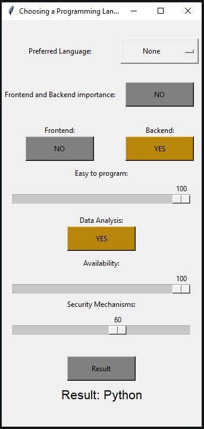
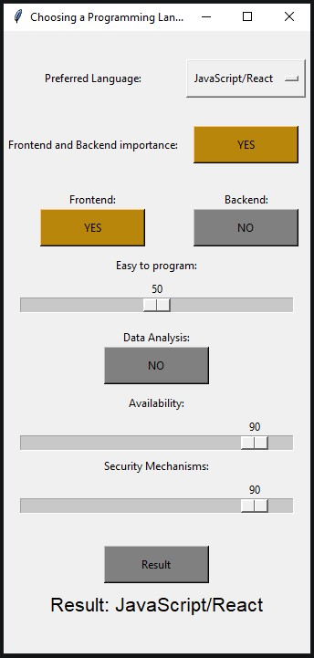
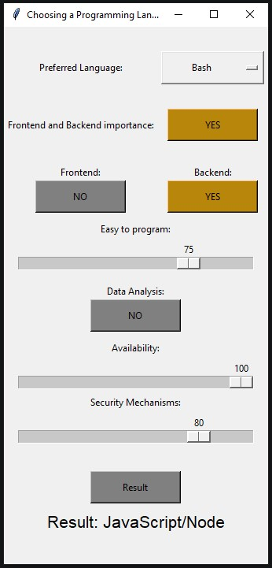

Use Cases#
Sample use cases for users
First User#
Beginner
Story#
I am a beginner programmer and I want to find out what programming language will be the easiest for me to start with for backend programming. I also want to work with data. I want my programming language to be very accessible in society and be relatively secure.
Parameters#
“Preferred Language” -> set to “None”
“Frontend and Backend importance” -> set to “NO”
“Frontend” -> set to “NO”
“Backend” -> set to “YES”
“Easy to program” -> set to 100
“Data Analysis” -> set to “YES”
“Availability” -> set to 90
“Security Mechanisms”: -> set to 60
UI Preview#
Prediction#
Python
Second User#
Semi-experienced JavaScript/React programmer
Story#
I’m a semi-experienced frontend developer. I am looking for a suitable programming language, including only frontend languages. I want the language to be neither easy nor difficult, to be unrelated to data, to be highly recognizable and used in society, and to be safe. I want to look for a language with preferred JavaScript/React
Parameters#
“Preferred Language” -> set to “JavaScript/React”
“Frontend and Backend importance” -> set to “YES”
“Frontend” -> set to “YES”
“Backend” -> set to “NO”
“Easy to program” -> set to 50
“Data Analysis” -> set to “NO”
“Availability” -> set to 90
“Security Mechanisms”: -> set to 90
UI Preview#
Prediction#
JavaScript/React -> The same language he selected as preferred.
Third User#
Senior Bash programmer
Story#
I’m a senior backend developer. I am looking for a suitable programming language, including only backend languages. I want the language to be neither easy nor difficult, to be unrelated to data, to be highly recognizable and used in society, and to be safe on 75%. I want to look for a language with preferred Bash
Parameters#
“Preferred Language” -> set to “Bash”
“Frontend and Backend importance” -> set to “YES”
“Frontend” -> set to “NO”
“Backend” -> set to “YES”
“Easy to program” -> set to 75
“Data Analysis” -> set to “NO”
“Availability” -> set to 100
“Security Mechanisms”: -> set to 80
UI Preview#
Prediction#
JavaScript/Node -> NO the same language he selected as preferred.